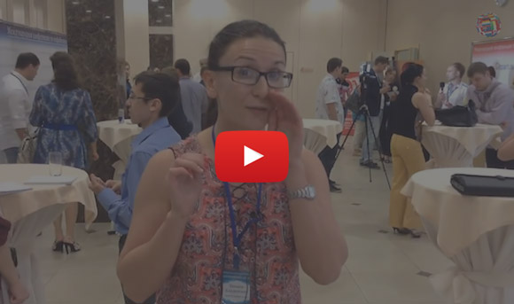
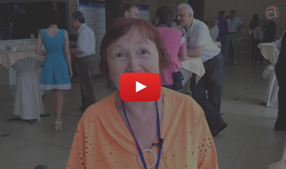

Признаюсь - меня зовут
зверь
инфобизнеса
Зверь инфобизнеса
существо свободолюбивое
Да-да, тот самый неуловимый Зверь Инфобизнеса, за которым днём и ночью охотятся все предприниматели Рунета. Зверь Инфобизнеса, которого так много людей хотят посадить на цепь и заставить работать на себя.
Но некоторые интернет-предприниматели, имена которых вам наверняка известны, всё-таки находят способы, чтобы поймать меня.
Сначала я сопротивляюсь, но когда понимаю, что для них польза выше денег, начинаю делиться с ними тем, что знаю сам.
-
Я посвящаю их
в таинства
эффективной
рассылки -
Делюсь знаниями
составления рекламных
текстов, из которых есть
только один выход -
кнопка“купить”. -
С моей помощью они
расставляют страницы
захвата и отлавливают
клиентов, получая
заветный e-mail
Сегодня я ещё гуляю по улицам Санкт-Петербурга, но уже совсем скоро планирую нырнуть в Балтийское море и поплыть куда-нибудь в сторону Финляндии. И если вам не достанет смелости отправиться за мной, возможно, вы так никогда и не сможете выйти на достойный доход из интернета.
Но давайте обо всём по порядку, хорошо?
А пока скажите...
Кто мешает вам
заниматься инфобизнесом?
В одном из своих бесчисленных романов Стивен Кинг написал такую фразу:
Интересно, как много мы думаем за себя сами и сколько думают за нас?
Какой отклик эти слова находят в вашей душе? Знакомо ли вам чувство непонимания со стороны
окружающих, которые давят на вас, как каток на горячий асфальт? Знакомо ли то разочарование,
когда родные и близкие скептически относятся к вашим грандиозным замыслам?
А иногда и вовсе
смеются?
"Инфобизнес? - говорят они с этакой мягкой улыбкой, как если бы разговаривали с упёртым ребёнком. - Почему бы тебе не найти нормальную работу? Нормальное занятие?"
После таких слов руки опускаются, не так ли? Начинается процесс самокопания, который приводит к зловредным сомнениям. И вы начинаете думать: "А может и правда я занимаюсь ерундой"
Ваш проект уже не кажется таким замечательным.
И за проблемами не виден успех.
пытаются вам помешать?
Потому что живут в собственном ограниченном мирке, потому что сомнения съедают их изнутри. У них не достаёт смелости нести огромную пользу в этот мир и получать за это достойное вознаграждение. И в глубине души они боятся вашего успеха. Ведь тогда станет очевидным, что все их собственные неудачи происходят не из-за несправедливости мира, а из-за их бездействия.
Ладно, это не такая уж большая помеха, если по-честному. Достаточно влиться в правильное окружение и зарядиться его энергетикой. А ведь есть и другие проблемы.
Вот, например, скажите…
Как вы изучаете инфобизнес?
Большинство ответят:
-
Я сижу дома и
смотрю тренинги -
Я читаю рассылки
известных интернет-
предпринимателей -
Я набиваю шишки практикуясь
самостоятельно
Это одновременно правильно и ошибочно. Что может быть приятнее кружки горячего чая у компьютера и какого-нибудь дорогого (или не очень) видеокурса. Это отличный способ получить необходимые знания, проблема лишь в том, что...
Одновременно с вами каждый день на рынок выпускаются десятки инфобизнесменов, которые не заходят дальше одной продажи. У сотен и тысяч ребят по всей России в головах живут самые настоящие золотоносные гусыни: теоретические знания, которые могут принести миллионы.
Но эти гусыни не несут золотые яйца. И пока вы накапливаете и накапливаете информацию, не применяя её, она “протухает” в вашей голове.
Не забывайте, что мы говорим об интернете, который мчится вперёд, как ракета, и всё дальше удаляется от земли. И чтобы получать сверхрезультаты, нужно действовать не медля.
Что же вам мешает сделать это?
Заманчиво, не правда ли?
-
Зарабатывайте больше
Раньше вы зарабатывали свои кровные 15 тысяч
в месяц, вкалывая круглыми сутками, а сегодня
вам говорят, что за 1-2 часа в день можно
получать сотни тысяч. -
Отдыхайте круглый год
Раньше вы отдыхали 24 дня в году, а сегодня
выясняется, что отпуск может длиться
круглый год. -
Путешествуйте
Раньше вы не видели ничего, кроме грязных
улиц вашего города, а теперь приходит
понимание, что вы можете путешествовать по
разным местам и странам, нигде не
задерживаясь дольше недели.
Это внутренние барьеры, с которыми сталкивается практически каждый. И преодолеть их, взойти на новую ступень развития, пробить привычный уровень дохода в атмосфере недоверия со стороны окружающих…
Это непросто. Будь это просто, вы бы сейчас попивали коктейль где-нибудь на
Гаити вместо того,
чтобы
читать этот текст.
Кто сказал, что вы один против целого мира?
Лучшие инфобизнесмены Рунета готовы поддержать вас, подсказать верное направление и поделиться собственными секретами. И отнюдь не в формате видеокурса, а при личной встрече. На ежегодной конференции, которая называется
“Питеринфобиз-2015”
Морская охота на Зверя Инфобизнеса
Когда - 24-28 июня 2015 года
Где - паром принцесса «Анастасия»
Маршрут - Санкт-Петербург – Хельсинки – Стокгольм – Таллин – Санкт-Петербург.
Что вас ждет на этом мероприятии
-

Вы получите пошаговую инструкцию создания и развития своего инфобизнеса с полного нуля до выхода на автоматизацию
-
Проникнете в тайну психологии ваших клиентов, благодаря чему сможете продавать больше при меньших затратах на рекламу
-
Лично познакомитесь с легендами инфобизнеса, сможете найти стратегического партнёра для запуска совместных проектов
-
Вы получите бесценную поддержку, уверенность в своих силах и неминуемом успехе, на многие месяцы вперёд
-
Ценные подарки от спикеров для дальнейшего самостоятельного изучения и внедрения
-
Выступления артистов, шоу-программа, праздничные обеды и экскурсии по городам Хельсинки, Стокгольм и Таллин
Что вас точно не ждет на этом мероприятии
-
Бла-бла-выступления, самопрезентации и самопиар спикеров
-
Призывы типа: “Чтобы получить больше информации, покупайте тренинг…”
-

Скучные многочасовые лекции, которые так же легко “перевариваются”, как камни
Те, кто занимается оказанием интернет-услуг - копирайтинг, продюссирование проектов, дизайн и вёрстка одностраничников и др. окажутся плечом к плечу с тремя сотнями потенциальных клиентов - начинающих и действующих инфобизнесменов
А вот что ждет вас когда
инфокруиз закончится
-
Развеете сомнения
Вы докажете людям, которые сомневались в вас, что инфобизнес - это в первую очередь серьёзный БИЗНЕС, а не трата времени, когда, например, сделаете неожиданную крупную покупку.
-
Путешествовать и зарабатывать
Вы сможете путешествовать по всему миру с ноутбуком под мышкой и зарабатывать деньги хоть бы и на необитаемом острове. Конечно при условии, что поймаете Wi-Fi.
-
Стабильный
доходВы создадите стабильный доход от 100 000 рублей в месяц из интернета.
Кто организовал
охоту на зверя инфобизнеса?
Позвольте представить вам человека, в чью голову пришла идея создания первой
международной конференции, которая объединяет интернет-предпринимателей разных отраслей под флагом
“Питеринфобиза”
уже третий год подряд.
Встречайте
- Писатель
- Бизнес-тренер
- Блоггер и телеведущий
- Эксперт по созданию информационных продуктов и проведению вебинаров
- Автор множества книг, тренингов и видеокурсов
- Лауреат премии президента РФ в 2010 году
- Член союза писателей России
Несмотря на то, что с отличием окончил Военную Академию и имел все шансы, чтобы построить успешную карьеру, пошёл по более сомнительному пути - пути информационного бизнеса. Преодолел скептицизм родителей и насмешки друзей и стал тем, кого все мы хорошо знаем - организатором “Питеринфобиз”, автором полезных тренингов и книг по инфобизнесу и личностному росту.
Но так ли хороша конференция, как организатор?
Чтобы понять это, посмотрите…
Как это было на “Питеринфобиз-2014”
Было здорово, не правда ли? Но грядущее мероприятие
будет ещё интереснее, ещё круче! Чего же вы
боитесь?
Не бойтесь стать богатым!
Это кажется невероятным и неправдоподобным, а ведь многие люди боятся богатства, боятся больших денег. Это так. И это нормально.
Но неужели вы думаете, что мы приходим в этот мир, чтобы мучиться и страдать?
Хуже того, неужели вы думаете, что мы приходим в этот мир, чтобы передавать мучения и страдания по
наследству - своим детям, которые обречены вырасти, никогда не посетив Дисней-Ленд? Которые обречены
видеть нас только в короткие вечерние промежутки, когда мы возвращаемся с работы: злые,
голодные
и
уставшие?
рождения. Но наши родители, слишком занятые
выживанием, забыли нам это сказать.
Вы переживаете, что
у вас нет достаточных
знаний и навыков для того,
чтобы
преуспеть?
Сомневаетесь, что
сможете зарабатывать
40 000 - 400 000 рублей в
месяц не выходя
из дома
или
же наоборот, вовсе не
появляясь там?
Посмотрите на наших замечательных спикеров. В большинстве своём - это молодые ребята, простые в общении и повседневной жизни. Они не небожители, не греческие боги, сошедшие на землю, а обыкновенные люди, раскрывшие свой потенциал, сумевшие найти себя и помогающие делать это другим.
Если брать пример не с них, то с кого?
Спикеры Питеринфобиз-2015
-
Евгений Попов
Разработчик и ведущий тренингов, консультант, маркетолог и копирайтер. Разработчик «Пси-бизнес-СИСТЕМЫ».
Первым в России ввёл в употребление термин «пси-бизнес», разработал терминологическую базу и первым начал обучать системному продвижению и продажам психологических услуг.
Автор первой в России (2009 год) книги по продвижению и продажам психологических услуг «Богатый Психолог, Бедный Психолог».
Передовые и высокотехнологичные авторские маркетинговые наработки позволяют этой системе тренингов быстро набирать обороты в сверхконкурентной теме личностного роста.
-
Дмитрий Богданов
Основатель и руководитель «Института Психологического Бизнеса». Владелец и руководитель медиахолдинга «ElexisGroup».
Разработчик и ведущий тренингов, консультант, маркетолог и копирайтер.
Разработчик «Пси-бизнес-СИСТЕМЫ».
Первым в России ввёл в употребление термин «пси-бизнес», разработал терминологическую базу и первым начал обучать системному продвижению и продажам психологических услуг.
Автор первой в России (2009 год) книги по продвижению и продажам психологических услуг «Богатый Психолог, Бедный Психолог».
Тема выступления:
Системный Инфобизнес "для взрослых".
Отладка бизнес-процессов и управление сотрудниками.

-
Макс Хигер
- в 2001 году начал заниматься электронной коммерцией и сразу же понял, что за торговлей через интернет - будущее.
Многим он известен как один из пионеров, которые отважились в свое время, несмотря на общий скептицизм и критику, нырнуть в онлайновый бизнес и доказать остальным, что здесь скрыты фантастические возможности.
Интернет-проекты Макса:
- Сервис почтовых рассылок СМАРТРЕСПОНДЕР
- Ежемесячная бесплатная рассылка по
интернет-маркетингу khiger.com
Тема выступления:
Как выбрать прибыльную и интересную нишу
в интернете. -
Азамат Ушанов
Эксперт в области е-мэйл маркетинга, одного
из самых известных российских специалистов
по продаже информации.Основная специализация - обучение построению и
монетизации базы подписчиков в интернет, а также другим
смежным сферам в области инфо-бизнеса. Ведет свою
деятельность уже более 8 лет. Автор популярных обучающих
тренингов "Золотой актив", "Массовые продажи", "7-дневный план
продажи информации с нуля" и многих других.Тема выступления:
Как выстроить прибыльную воронку продаж
-
Макс Хигер
- в 2001 году начал заниматься электронной коммерцией и сразу же понял, что за торговлей через интернет - будущее.
Многим он известен как один из пионеров, которые отважились в свое время, несмотря на общий скептицизм и критику, нырнуть в онлайновый бизнес и доказать остальным, что здесь скрыты фантастические возможности.
Интернет-проекты Макса:
- Сервис почтовых рассылок СМАРТРЕСПОНДЕР
- Ежемесячная бесплатная рассылка по
интернет-маркетингу khiger.com
Тема выступления:
Как выбрать прибыльную и интересную нишу
в интернете.
Можно было бы привести здесь длинный-предлинный список известных вам имён и лиц, но мне кажется, что присутствие на конференции таких акул инфобизнеса как Макс Хигер и Азамат Ушанов уже говорит об уровне “Питеринфобиз-2015”.
Пусть остальные участники станут для вас неожиданным сюрпризом. Со своей стороны обещаю, что все они - известные предприниматели, которые хорошо разбираются в своём деле и успешно обучают других.
Хочу обучаться у этих людейВы хотите создавать инфопродукты или
заниматься трафиком, продающими
страницами
и рассылкой?
Слово инфобизнес состоит из двух частей - это “инфо” и “бизнес”. И разумно было бы поделить ответственность за каждую из них на разных людей.
Кто-то хочет делиться информацией с миром, помогать людям узнавать что-то новое, овладевать навыками. А кто-то хочет заниматься исключительно техническими моментами - такой человек называется продюсером. Он отвечает за трафик, за продающие тексты, рассылку, настройку счётчиков для анализа поведенческих факторов посетителей сайта...
Когда вы стараетесь совместить в себе обе эти роли - роль информатора и роль бизнесмена - перед вами постоянно встают всё новые и новые вопросы, цепочки проблем и сложностей из разных областей.
Допустим, у вас уже есть продукт...
-
Шаг
Теперь вам
нужен сайт, чтобы привлекать заинтересованных людей -
Шаг
Затем вам нужна посадочная страница для сбора e-mail, куда вы будете делать рассылку
-
Шаг
Потом - серия писем, чтобы поддерживать интерес
-
Шаг
Продающий текст, где будет размещаться ваш товар
-
Шаг
Приём платежей, чтобы люди могли пересылать вам деньги удобным для них способом
Ещё нужно замерять конверсию, тестировать, увеличивать количество переходов по ссылкам, количество переходов на оплату, количество продаж…
Сумасшедший дом, да и только. Не мудрено, что одному человеку очень сложно одновременно создавать продукты и следить за новыми трендами привлечения трафика, овладевать искусством копирайтинга и бороться с техническими монстрами.
Если вам нравится создавать инфопродукты, вы найдёте того,
кто будет решать
технические проблемы.
Если вам ближе такие понятия как воронка продаж, трафик, конверсия и прочее -
вы найдёте человека, товары которого станете продвигать на рынок.
А теперь более конкретно, какие же люди будут на “Питеринфобиз-2015”.
Хочу найти себе партнераКого мы ждем с нетерпением
на конференции
-
Практикующие инфобизнесмены
Коучи, тренера и владельцы интернет-магазинов, которые творят историю современного Рунета - желанные гости на палубе Питеринфобиз-2015. Если вы хотите выйти на новый уровень дохода, узнать, как получать больше прибыли при меньших затратах на рекламу - милости просим.
-
Начинающие инфобизнесмены
Когда нет необходимых знаний и опыта, нет уверенности и поддержки, когда не к кому обратиться за помощью… Тогда к вашей пристани отчаяния причаливает наш корабль и спускает трап надежды. Есть ли свет в конце каюты? Да, но это никакой не свет, это блеск вашего успеха! Идите к нему вместе с нами.
-
Интернет-маркетологи и продюсеры
Вы помогаете инфобизнесменам проводить запуски новых проектов и щедро делитесь своими знаниями и опытом? Не окажитесь за бортом нашей конференции, чтобы стать обладателем самых продуктивных секретов и знаний от успешных маркетологов и продюсеров Рунета.
-
Фрилансеров и Блоггеров
Вы подумываете о том, чтобы перенести своё дело в интернет, забыть о бесконечной беготне и суете, бумажной волоките и иметь больше свободы? Получить известность, признание
ваших трудов и талантов - всё это
в ваших силах!
Кроме того, если вы хотите собрать сильную команду, ищите выгодных партнёров или адекватных клиентов, то лучшего места чем корабль, где им некуда будет от вас скрыться, просто не найти!
Я нашел себяПротивопоказания конференции
Всегда есть люди, даже на семейных праздниках, которым не рады.
Мероприятие такого масштаба как “Питеринфобиз” не может быть исключением, но мы постарались сделать всё, чтобы оттолкнуть только одну категорию людей.
-
Денежный мешок
Мы говорим о тех, кто ставит деньги превыше всего и совершенно не задумывается о той пользе (или тех разрушениях), которые несёт в этот мир.
Мы говорим о людях, которые выпускают на рынок
тренинги-пустышки, и прочие бесполезные товары.
Мы против того, чтобы вкладывать инструменты
успешного ведения интернет-бизнеса в руки
людей, которые думают только о толщине
собственного кошелька и процветают
за счёт обмана.
Искренне надеемся, что вы не входите в эту категорию людей.
И чтобы сгладить эффект от этого неприятного отступления,
предлагаем вам подзарядиться энергетикой, посмотрев
Гимн “Питеринфобиз”
ПОчему мест не хватит на всех?
Именно столько человек смогут принять участие в Питеринфобиз-2015. Цифра кажется внушительной. И можно не торопиться с покупкой, а просто отложить её на потом, не так ли?
И вот почему.
Сейчас, на старте продаж, вы получаете возможность купить билет по самым низким ценам. И вполне вероятно, что все билеты будут распроданы именно на этом этапе. Кому хочется переплачивать только потому, что не принял решение сразу?
Я хочу купить билет по самой выгодной ценеЕсть ли смысл посещать
конференцию новичку?
Отзывы участников “Питеринфобиз-2014”
-

-

Нет. Она подходит также и тем, кто хочет выйти на более высокий уровень развития своего информационного бизнеса. Кто хочет познакомиться с новыми фишками и свежими идеями, которые сможет внедрить в своей нише и получить новые результаты.
Как вы знаете, интернет развивается и мчится вперёд со скоростью гоночного болида.
То, что давало сверхрезультаты год назад, завтра может приносить только убытки и головную боль.
А то, что не работало позавчера, сегодня может вас озолотить.
Посмотрите этот отзыв, чтобы узнать, какие перспективы открывает конференция перед практикующим инфобизнесменом.
Что делать, если нет времени?
Люди - это самое удивительное, что есть на этой планете. Они не могут простоять на перекрёстке лишних 20 секунд - перебегают на красный, потому что время дорого. И они же проводят у компьютера 60-90 часов в месяц, проглатывая сезон за сезоном “Во все тяжкие”, “Игру престолов” или что-то в этом духе.
-
Остановить свое развитие прямо cейчас
И потратить следующие 20-40 лет жизни на работу, которая не приносит ни удовлетворения, ни денег
-
Пересмотреть свое отношение к понятию “свободное время”
Если взять все эти телевизоры, соцсети и бестолковые разговоры и вычеркнуть из жизни, окажется, что время у вас есть.
-
Отправиться на “питеринфобиз-2015” и найти партнера
Который возьмет на себя часть вашей работы.
Вам нужен самый сильный
довод в пользу покупки?
Если бы этот текст писался заурядным копирайтером, то на этом месте находился бы какой-то самый сильный, самый главный довод в пользу покупки билета на конференцию. Что-то такое, что отличает это предложение от конкурентов, что-то такое, чего ещё никто вам не предлагал…
Но вы ведь понимаете, что автор данного текста и ваш покорный слуга - Зверь Инфобизнеса - персонаж, которого никак нельзя назвать заурядным?
Поэтому скажите...
-
Как часто вам предлагают
провести 4 невероятно
продуктивных дня на корабле
посреди Балтийского моря? -
В кругу людей, которые
относятся серьёзно и с уважением
к тому, чем вы занимаетесь и к
чему стремитесь? -
4 дня в обществе лучших
инфобизнесменов Рунета, которые
готовы поделиться своими
знаниями и секретами.
Важное предостережение!
По мере чтения у вас могло возникнуть ощущение, что конференция “Питеринфобиз-2015” - это идеальное во всех смыслах мероприятие. Мне бы и хотелось, чтобы у него не было никаких изъянов, сами понимаете, но это не так.
справиться с некоторыми трудностями.
-
Во-первых
Вырваться из своей зоны комфорта - это всегда непросто, особенно если до этого вы не посещали живых мероприятий. Нужно плыть куда-то с незнакомыми людьми, открывать своё сознание новым знаниям, общаться и знакомиться.
Но вы легко преодолеете этот барьер, если поймёте, что вам действительно нужно попасть на “Питеринфобиз-2015”, чтобы получить результаты, о которых раньше вы стеснялись даже думать.
-
Во-вторых
Так как мы говорим не просто о конференции в актовом зале средней школы, а о замечательном приключении, во время которого вы посетите столицы Финляндии, Швеции и Эстонии, вам придётся заблаговременно позаботиться о загранпаспорте и визах.
Кроме того, ценность фотоаппарата в таком путешествии невозможно переоценить. Не забудьте о нём.
Если эти небольшие трудности вас пугают,
возможно, у вас возник такой вопрос:
Может, лучше купить
тренинг “в коробке”?
Как я уже сказал выше, многие люди боятся выходить из своей зоны комфорта. Для них гораздо удобнее купить видеокурс, развалиться в кресле перед монитором и начать освоение инфобизнеса не выходя из дома. Вполне логичное на первый взгляд решение, да только…
невозможно быть талантливым во всём?
Каждый человек силён
в какой-то определённой области.
И инфобизнесмены - не исключение.
Кто-то является гуру рассылки, кто-то - гением одностраничных сайтов, другой съел дюжину собак на трафике, а четвёртый - эксперт по самомотивации.
Конечно-конечно, каждый из них знаком со всеми этими моментами, но задумайтесь вот над чем. И
спринтер, и футболист, и баскетболист - все они бегают, только за разными наградами и в
разных направлениях.
И если выпустить Майкла Джордана на футбольное поле,
будет ли он так же эффективен, как на
своём баскетбольном?
Поэтому, чтобы вы могли получить самые
эффективные знания из каждой области
инфобизнеса, мы приглашаем выступать не
одного спикера (что было бы намного дешевле,
сами понимаете), а нескольких - десятки спикеров!
Каждый из них в своём выступлении касается одной узкой темы, в которой добился наилучших
результатов.
О том, что домашний компьютер не подарит вам дружелюбной атмосферы, незаменимого живого
общения со спикерами, 4-хдневной прогулки по Балтийскому морю, и говорить нечего.
Питеринфобиз-2015
это не только новые знания и навыки, это ещё и правильное окружение.
А окружение -
это, как известно, либо половина успеха, либо три четверти провала.
Поэтому отбросьте сомнения,
выберите вариант участия в конференции и нажмите кнопку “Участвовать”, чтобы получить билет по самой
выгодной цене.
| Что включает | Эконом | Стандарт | Компфорт | VIP |
|---|---|---|---|---|
| Участие в конференции | ||||
| Каюта класса B (без окна) | ||||
| Каюта класса А (с окном) | ||||
| Каюта VIP класса повышенной комфортности | ||||
| Каюта luxe-класса с гостинной | ||||
| Завтрак в каждой стране в самом лучшем ресторане парома | ||||
| Экскурсия в каждой стране (Финляндия, Швеция, Эстония) | ||||
| Профессиональная фотосессия со спикерами | ||||
| Бонусы от спикеров (записи тренингов) | ||||
| Секретный бонус №1 | ||||
| Секретный бонус №2 | ||||
| Цена до 1 февраля 2015 года | 25000 Р | 35000 Р | 65000 Р | 130000 Р |
| Обычная цена | ||||
| Заказать | Заказать | Заказать | Заказать |
Как быстро окупятся вложения
в поездку на Питеринфобиз-
2015?
Окупаемость подобного вложения невозможно оценить логически.
-
Во-первых
Я приглашаю вас не просто в какой-нибудь конференц-зал с жёсткими креслами и немытым полом.
Я приглашаю вас на круиз по трём странам на комфортабельном корабле в компании интереснейших людей, которые могут стать вашими стратегическими партнёрами.
-
Во-вторых
Вы получаете не “просроченный” видеокурс с устаревшей информацией. Вы узнаёте о последних достижениях в области инфобизнеса от успешных инфобизнесменов.
Незабываемый отдых, обучение в непринуждённой обстановке, новые связи, новые партнёры, новые возможности… Можно ли измерить всё это в деньгах?
Надеюсь, мы поняли друг друга. Как я и говорил в самом начале этого послания, я намереваюсь ещё некоторое время побродить по улицам Санкт-Петербурга, а затем поплыву в сторону Финляндии. Вы знаете, где меня можно найти и кто поможет вам заставить меня работать на вас.
чтобы отправиться за мной?
Искренне ваш,
Зверь Инфобизнеса
Ответы на вопросы
-
Я уже прошёл несколько курсов и тренингов, но пока не получил
положительных результатов, руки опускаются. Стоит ли мне получать очередную порцию знаний?
Поверьте, вы не один такой. Очень часто не хватает мотивации и поэтому нет желания идти вперед (некоторые неразумно называют такое состояние ленью). Выступления спикеров, позитивное окружение, восхитительная атмосфера и живое общение дадут заряд бодрости на целый год! Проблема самодисциплины и концентрации очень сильно распространена, поэтому этим вопросам будет уделено особое внимание.
Прежде чем принимать решение, задайте вопрос себе: вы уверены, что хотите что-то кардинально изменить в своей жизни? Готовы ли вы работать ради вашей цели? Потому что ваш успех в ваших руках.
-
Если у меня будут возникать вопросы, кому я смогу их задать?
Спикеры с удовольствием ответят на все ваши вопросы. Как в рамках своих выступлений, так и после них.
-
Как скоро я смогу запустить свой инфобизнес?
Это зависит только от вас. От вашей целеустремлённости, от вашего упорства. Сколько денег вы готовы вложить в развитие своего бизнеса? Сколько времени готовы уделять ежедневно? Чем выше названные вами цифры, тем скорее будет результат.
Но надо понимать, что инфобизнес - это не игра в “монополию”. В него невозможно выиграть. Можно только развивать его или сдаться, не дойдя до цели всего пару шагов.
-
Может, мне стоит подождать следующей конференции?
Ждите, если вам не жалко потерять ещё год времени.